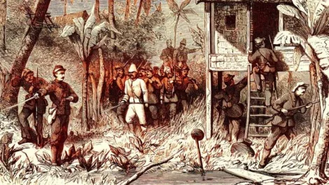

Perang banjar gelombang 2 (1859-1862)
Perang banjar gelombang 2 ㅤㅤ(1859-1862)
Ini Adalah Halaman Utama
Latar belakang halaman ini (elemen body) sekarang menggunakan **gambar** dengan properti `background-image` dan properti kontrol lainnya. Header dan footer dibuat sedikit transparan agar gambar latar belakang tetap terlihat.
Keuntungan Situs Statis:
- **Kecepatan:** Memuat sangat cepat karena tidak perlu memproses data.
- **Keamanan:** Sangat aman karena tidak ada celah keamanan database atau sisi server.
- **Biaya:** Biasanya lebih murah untuk di-*hosting*.
Untuk membuat halaman lain (seperti 'Tentang Kami' atau 'Kontak'), Anda hanya perlu membuat **file HTML baru** (misalnya `tentang.html`) dan mengisinya dengan konten yang berbeda.